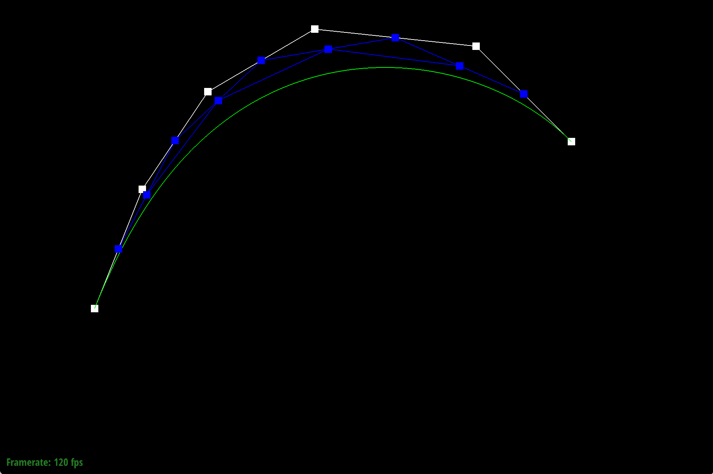
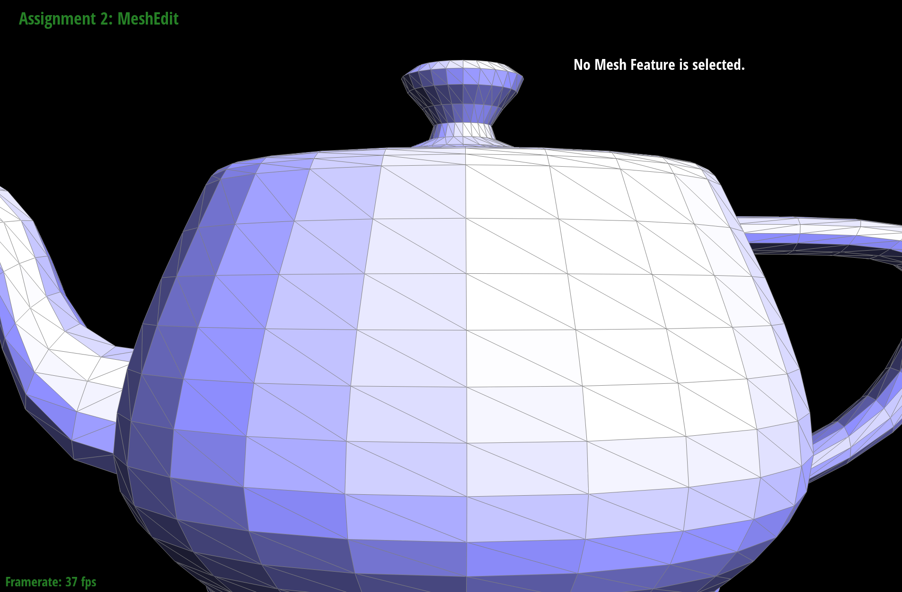

CS184/284A Spring 2025 Homework 2 Write-Up
Names: Keagan Chern, Ice Unjitwattana
Link to webpage: https://cal-cs184-student.github.io/hw-webpages-supa-webpage/hw2/index.html
Link to GitHub repository: https://github.com/orgs/cal-cs184-student/teams/supaices

Overview
In this homework we started off building smooth curves and surfaces using Bezier curves and surfaces determined by de Casteljau algorithm. We then moved on to triangle meshes and the half-edge data structure, were we implemented area-weighted vertex normals, edge flip, and edge split operations. Finally, we using the different operations we combined them to perform loop subdivision for mesh upsampling.Section I: Bezier Curves and Surfaces
Part 1: Bezier curves with 1D de Casteljau subdivision
- Briefly explain de Casteljau’s algorithm and how you implemented it in order to evaluate Bezier curves.
The algorithm takes in n control points and performs lerps (with parameter t) to convert it into n-1 points. It then recursively calls itself until the points are interpolated into 1 single point.
The high-level pseudocode of the function that performs a single step in this algorithm is (note that we do not perform the recursive call here):if size of control point list is 1, return the point else: for each point 0 to n-1: perform lerp between that point (x) and point x+1 using the parameter t return the list of lerp results - Take a look at the provided .bzc files and create your own Bezier curve with 6 control points of your choosing. Use this Bezier curve for your screenshots below. Show screenshots of each step / level of the evaluation from the original control points down to the final evaluated point. Press E to step through. Toggle C to show the completed Bezier curve as well.
6 control point, Bezier curve step 1  6 control point, Bezier curve step 2 6 control point, Bezier curve step 3 6 control point, Bezier curve step 4 6 control point, Bezier curve step 5
The above screenshots is a step by step run through of the de Casteljau algorithm with 6 control points. We can see that the Bezier curve is interpolated from the control points. The curve is interpolated at each step, getting closer to the final point on the Bezier curve.
- Show a screenshot of a slightly different Bezier curve by moving the original control points around and modifying the parameter t via mouse scrolling.
different 6 control point Bezier curve at a modified parameter t
Part 2: Bezier surfaces with separable 1D de Casteljau
-
Briefly explain how de Casteljau algorithm extends to Bezier surfaces and how you implemented it in order to evaluate Bezier surfaces.
To extend the algorithm to surfaces, we simply have to perform multiple recursive evaluations, first to interpolate the rows into a single point per row, then interpolating all those rows into a point on the surface. The complete pseudocode is as follows:
When we do this for every value of u and v between 0 and 1, we will have rendered our Bezier surface!for each u and v values: for each row of control points: perform 1D evaluation using u store the result in an intermediate list (l) perform 1D evaluation on the l using v Here, 1D evaluation is a helper function that performs recursive interpolation on a list of points similar to Bezier curves and returns a single point. -
Show a screenshot of bez/teapot.bez (not .dae) evaluated by your implementation.
teapot.bez
Section II: Triangle Meshes and Half-Edge Data Structure
Part 3: Area-weighted vertex normals
-
Briefly explain how you implemented the area-weighted vertex normals.
Using the halfedge iterator, we traversed to all neighboring faces using theiter->twin()->next()logic. For each corresponding face, we check if face is a boundary face, if it's not we add the face's normal to the result vector. After we've iterated back to the same half-edge, we normalize and return the result vector.
-
Show screenshots of dae/teapot.dae (not .bez) comparing teapot shading with and without vertex normals. Use Q to toggle default flat shading and Phong shading.
flat teapot.bez teapot.bez with area-weighted vertex normals.
As shown in the screen shot, using area-averaged normals gives a much smoother shading compared to the teapot without which seems very blocky and flat.
Part 4: Edge flip
-
Briefly explain how you implemented the edge flip operation and describe any interesting implementation / debugging tricks you have used.
We strictly followed the advice on the spec and had a very smooth experience finishing this task! We drew out and labeled all halfedges, vertices, edges, and faces before and after the flip. We then wrote code to fetch all the elements such as half edges, vertex, edges, and faces. We then set half edges to the flipped state based on the flipped drawing using setNeighbors(...) then repointed all the half-edge pointers of faces, vertex, and edges to the correct half edge.
-
Show screenshots of the teapot before and after some edge flips.
unflipped teapot.bez after 1 edge flip after 2 edge flip after 3 edge flips after 4 edge flips after more edge flips
-
Write about your eventful debugging journey, if you have experienced one.
We luckily had very little debugging to do, thanks to the tip to make clean structured code. In the first attempt, one of the faces would be missing whenever we flip an edge. That turned out to be a very minor typo which we quickly identified and fixed.
Part 5: Edge split
-
Briefly explain how you implemented the edge split operation and describe any interesting implementation / debugging tricks you have used.
We followed a very similar strategy to edge flip. We drew out and labeled all halfedges, vertices, edges, and faces before and after the split. We then wrote code to fetch all the elements, as well as add new elements using the appropriate newHalfEdge/newVertex/etc functions. We then set half edges to the flipped state then repointed all the half-edge pointers to the correct half edge. A slight addition to the process is we had to configure the position of the new vertex to be the midpoint between the 2 vertices as well by finding the positions of the shared vertex, adding them, and dividing by 2.
-
Show screenshots of a mesh before and after some edge splits.
unsplit teapot.bez teapot.bez intermediate splitting state 1 teapot.bez intermediate splitting state 2 teapot.bez intermediate splitting state 3 teapot.bez intermediate splitting state 4 
teapot.bez final splitting state -
Show screenshots of a mesh before and after a combination of both edge splits and edge flips.
 default teapot.bez 
teapot.bez intermediate state 1 teapot.bez intermediate state 2 teapot.bez intermediate state 3 
teapot.bez final state with all spliting and flipping
-
Write about your eventful debugging journey, if you have experienced one.
Again, our clean code strategy saved a lot of debugging time. We ran into segfaults in the first attempt, but it turns out that's because we were calling iter constructors directly (eg HalfedgeIter()/VertexIter()) rather than the appropriate abstracted constructor (eg. newHalfEdge/newVertex) which will add those new objects to the linked list. Everything worked after we figured out that fix.
-
If you have implemented support for boundary edges, show screenshots of your implementation properly handling split operations on boundary edges.
NA
Part 6: Loop subdivision for mesh upsampling
-
Briefly explain how you implemented the loop subdivision and describe any interesting implementation / debugging tricks you have used.
We mainly followed the pseudocode provided in the comments. The steps and interesting implementations for each steps are as such:
-
Compute new positions for original vertices (also set vertex as not new). The trickiest part for this was computing the sum of all neighbors, we solved this by using a similar traversal trick to Part 3 and accessing neighboring vertices using
h->twin()->vertex()->position. The rest was just plugging in the provided equation. - Compute new positions for new vertices and storing them with edges first (also set edges as not new). Every thing in this section was straightforward, with standard halfedge traversals to get to neighboring vertices.
- Split every original edge. This was the trickiest part since splitting edges creates new edges which messes up our loop iteration. Our workaround for this was to create a copied list with all the original edges and loop over that instead. This meant that our iteration would not be affected by the new edges being added. Another neat trick we did was to update the isNew attribute inside the splitEdge() function directly so we do not have to worry about it here.
- Flip new edges that connected an old vertex with a new one. This is straightforward, but was a source of our main bug. We were only testing if an edge connected an old vertex with a new one, but did not test if the edge itself is marked as new. This caused some faces to flipped and the result to be malformed.
- Updating new vertex position. This is just a for loop with an assignment.
-
Compute new positions for original vertices (also set vertex as not new). The trickiest part for this was computing the sum of all neighbors, we solved this by using a similar traversal trick to Part 3 and accessing neighboring vertices using
-
Take some notes, as well as some screenshots, of your observations on how meshes behave after loop subdivision. What happens to sharp corners and edges? Can you reduce this effect by pre-splitting some edges?
default torus 1 time subdivided, torus 2 times subdivided, torus 3 times subdivided, torus 4 times subdivided torus
The above screenshots start with a rough torus with few triangle meshes. As we perform loop subdivision, we see that the overall structure becomes smoother eventually looking like a true torus shape. The sharp corners and edges become more round as more vertices are being added from each round of loop subdivision. You can reduce This effect by pre-splitting edges some edges. It will add new vertices which in the case of loop divison, which limits the averaging effect of neighbors. This causes a more sharp figure than smooth.
-
Load dae/cube.dae. Perform several iterations of loop subdivision on the cube. Notice that the cube becomes slightly asymmetric after repeated subdivisions. Can you pre-process the cube with edge flips and splits so that the cube subdivides symmetrically? Document these effects and explain why they occur. Also explain how your pre-processing helps alleviate the effects.
not preprocessed cube
default cube 1 time subdivided, cube 2 times subdivided, cube 3 times subdivided, cube 4 times subdivided cube
preprocessed cube with a split
default cube 1 time subdivided, cube 2 times subdivided, cube 3 times subdivided, cube 4 times subdivided cube